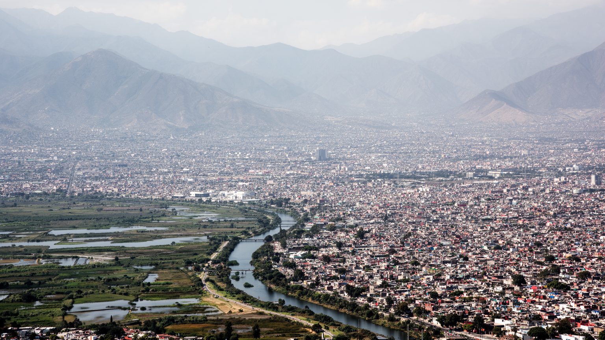
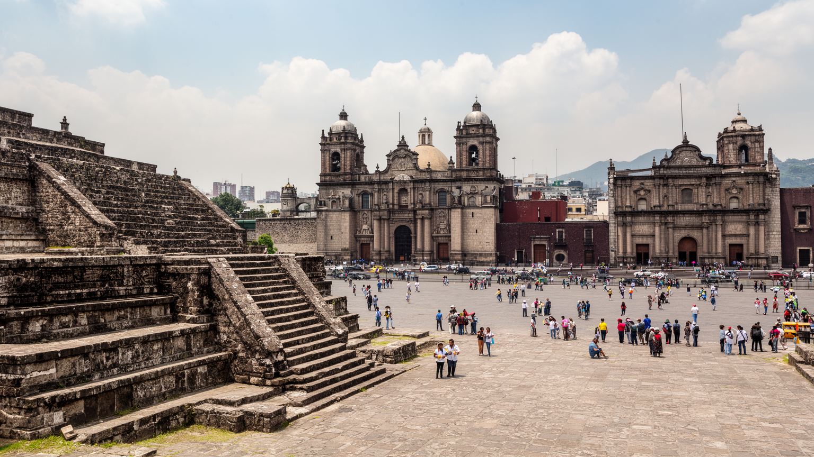
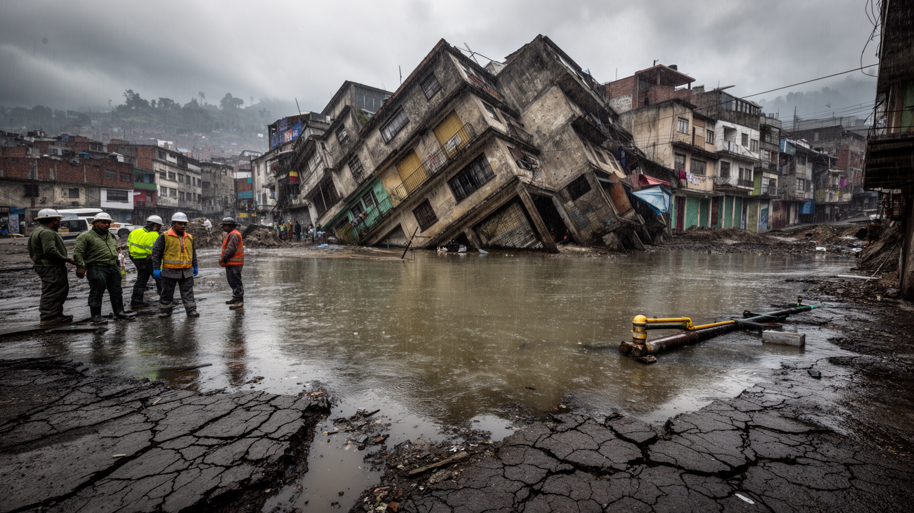
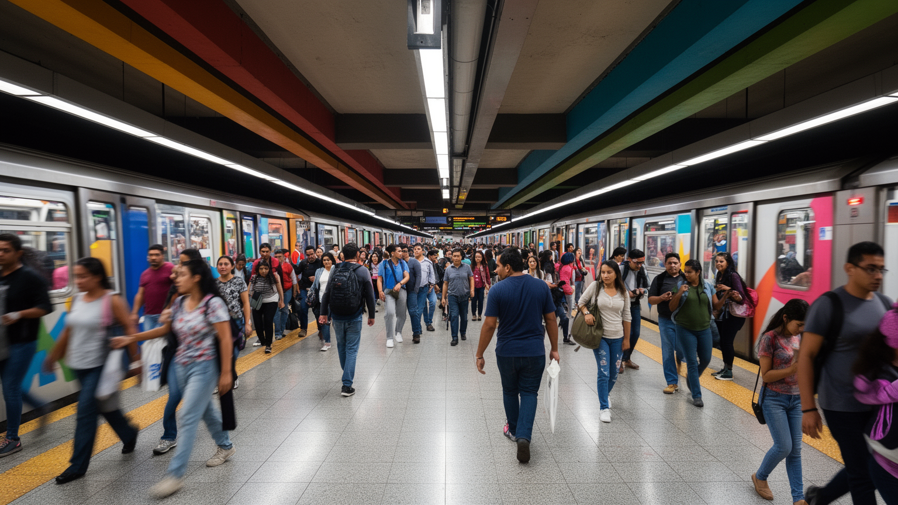
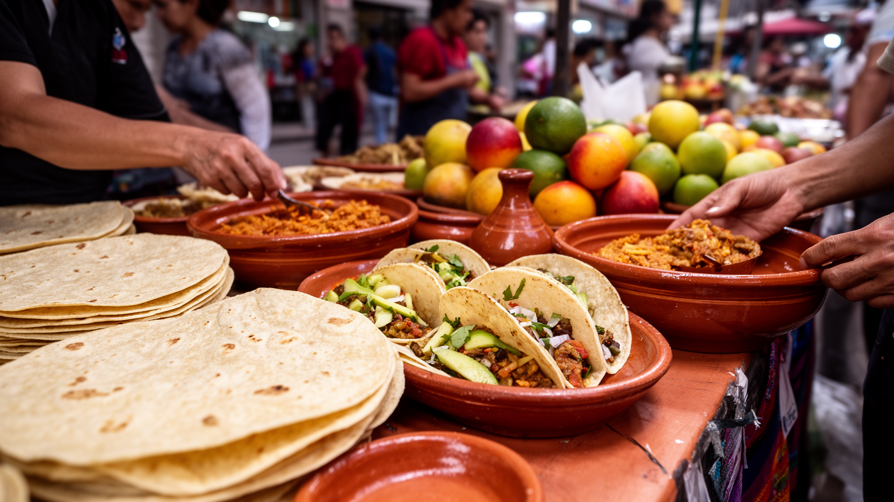
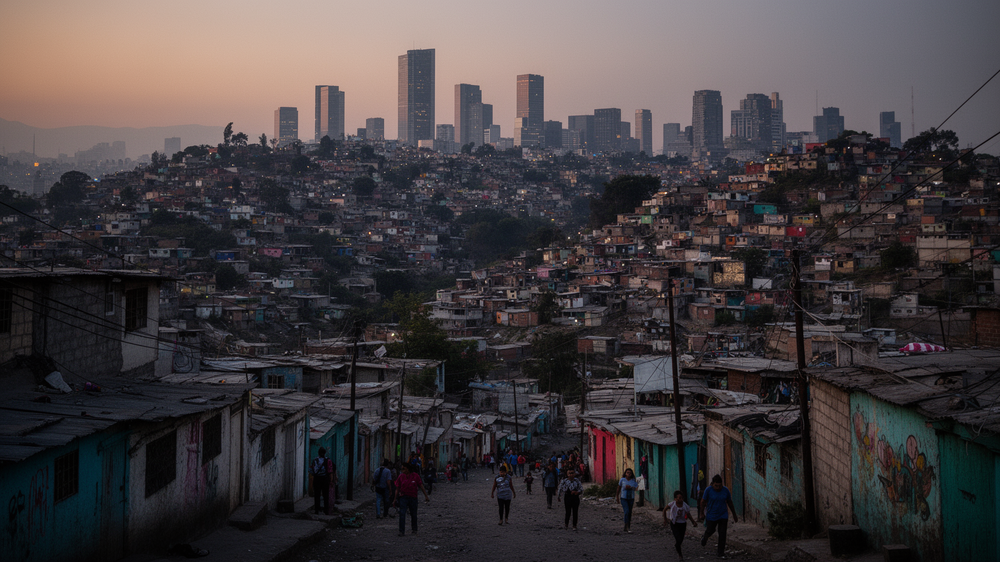
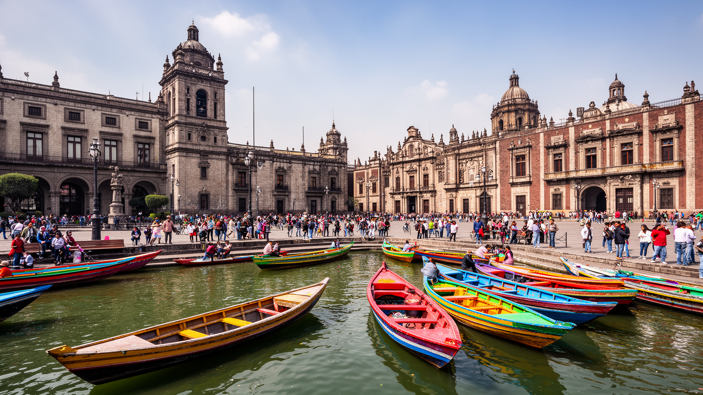
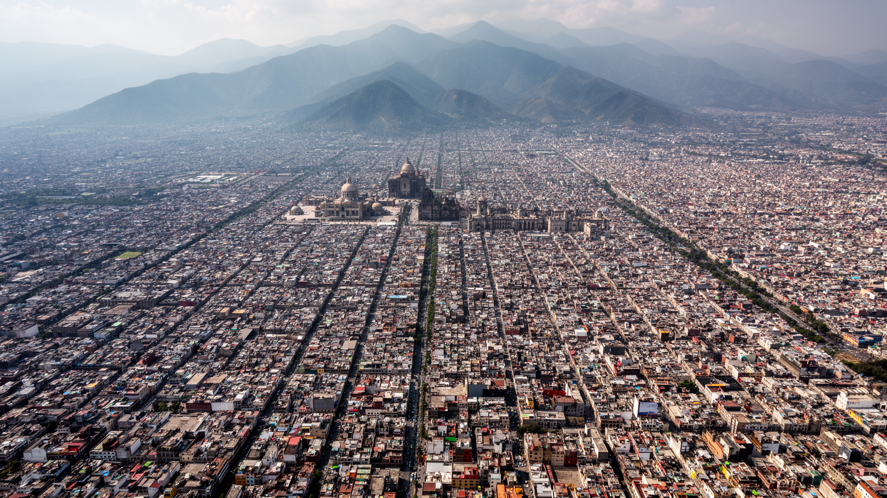

地政学
メキシコシティは北米、ラテンアメリカ、太平洋、大西洋を結ぶ国家首都で、高原盆地の中央に政治、司法、報道、抗議、外交が集中する。水と地盤の弱さも統治課題になり、首都の力と脆さが同じ街路に現れる都市だ。

🇲🇽 メキシコ / 北米 / World City Atlas
湖底の高原盆地に国家首都、先住民の記憶、植民地都市、地下鉄、市場、抗議、信仰、地盤沈下が重なる巨大都市。
都市の骨格
テノチティトランの湖上都市、スペイン植民地の広場、近代国家の官庁、地下鉄と市場が、標高の高い盆地で同時に動いています。

メキシコシティは北米、ラテンアメリカ、太平洋、大西洋を結ぶ国家首都で、高原盆地の中央に政治、司法、報道、抗議、外交が集中する。水と地盤の弱さも統治課題になり、首都の力と脆さが同じ街路に現れる都市だ。
行政、金融、大学、観光、食品、デザイン、メディアが厚く、周辺州の製造業や物流とも結びつく。露店、家事労働、配達、建設、清掃など非公式経済も巨大で、統計に見えにくい仕事が日々の都市を支えている首都だ。
アステカの記憶、植民地教会、グアダルーペ信仰、先住民儀礼、世俗的な壁画文化が重なり、信仰は観光名所だけでなく家族行事や市場の暦にも入り込む。死者の日や巡礼は都市の時間を強く形作っている首都である。
歴史地区、博物館、ソチミルコ、コヨアカン、市場、地下鉄は訪問者の入口だが、住民には家賃、渋滞、水不足、治安、地震、空気の悪さが日常の条件になる。華やかな文化都市は、生活の負担も抱えている場所である。

メキシコシティの地理は、標高の高い盆地と失われた湖を抜きに理解できない。都市の中心はかつてテスココ湖を含む湖沼地帯であり、現在の道路、地下鉄、広場、住宅地の下には軟弱な湖底の記憶が残る。周囲を山に囲まれた盆地は、政治と商業を集めやすい一方、空気が滞留し、水の排出が難しく、地盤沈下や洪水を招きやすい。スペイン植民地以降の排水事業と都市拡張は、湖を消しながら中心を広げてきたが、その代償は今日の水不足、沈下、インフラ更新費として現れている。都市を歩くと、高層ビル、植民地建築、露店、市場、地下鉄の駅が平らな地面に並ぶように見えるが、実際には地盤の揺れやすさと排水の不安が常に足元にある。高原の涼しさは生活を支えるが、周辺の山地と盆地構造は大気汚染を閉じ込め、車社会と工業活動の影響を見えやすくする。メキシコシティの都市計画は、拡大する人口を受け止めるだけでなく、消した湖とどう付き合い直すかという長い課題を抱えている。地形は背景ではなく、政治、住宅、交通、健康を左右する現役の条件である。さらに、雨季の水をどう貯め、乾季の不足をどう補うかは、地区ごとの生活格差に直結する。盆地の地形は都市を守る壁ではなく、逃げ場の少ない環境条件として、交通網、住宅地、工業配置、緑地政策まで静かに制約している現実である。

現在の歴史地区は、アステカ帝国の都テノチティトランの上にスペイン植民地都市が重ねられた場所である。ソカロ周辺では、テンプロ・マヨールの遺構、大聖堂、国立宮殿、格子状の街路が近距離に並び、征服、破壊、改宗、行政、商業の歴史が一つの広場に凝縮されている。先住民の都市は完全に消えたのではなく、石材、地名、儀礼、食、商い、都市の記憶として残り、植民地建築の足元で読み取れる。スペインは湖上都市の構造を変え、教会と役所を中心にした都市秩序を築いたが、先住民労働と地域の知識なしに都市は動かなかった。歴史地区を観光地として眺めるだけでは、そこにある暴力と混合の時間を見落とす。メキシコシティの文化的な厚みは、先住民の記憶と植民地支配の痕跡が対立しながらも日常化している点にある。市場で売られる食材、教会の祭礼、壁画の歴史観、地下の遺構は、国家の公式な物語とは別の声を持つ。中心部の保存は建物を守るだけでなく、誰の歴史を都市の中心に置くのかを決める政治でもある。石畳の美しさの下には、征服された都市がまだ呼吸している。この重層性は、博物館の展示だけではなく、学校教育、祭礼、観光案内、政治演説の言葉にも現れる。先住民の過去を誇りとして語るほど、現在の先住民住民が直面する差別や貧困も問われる重要な問題であり続ける。
メキシコシティは、国家の制度が街路に現れる首都である。大統領府、議会、最高裁、連邦官庁、政党、報道機関、大学、労働組合、社会運動の拠点が集中し、政策の決定と抗議の声が同じ中心部に集まる。ソカロや大通りは観光の舞台であると同時に、選挙集会、追悼、労働要求、女性への暴力に抗議する行進、先住民や農民の要求が可視化される政治空間である。首都に来なければ国に届かない声があるため、地方の不満もこの都市へ流れ込む。交通規制やデモの混雑は住民には負担だが、民主主義の緊張が街に見えることでもある。警察、露店、報道、観光客、通勤者、抗議者が同じ広場を使うため、都市の秩序は常に交渉で保たれる。メキシコの政治史には学生運動、労働運動、権威主義への抵抗、汚職批判、治安問題への怒りが深く刻まれており、首都の壁や広場はその記憶を持つ。メキシコシティを見ることは、権力の建物を確認するだけでなく、誰が声を上げる場所を持ち、誰の声が周縁化されるのかを読むことでもある。政治は議場の中だけでなく、歩道、地下鉄、広場、大学の門前で続いている。抗議の多さは不安定さの印象を与えるが、同時に公共空間が社会の痛みを受け止める力を持つことも示す。沈黙ではなく、混雑と声の中に首都の政治的な役割が見える重要な政治都市であり続けている場所である。
メキシコシティの経済は、行政、金融、通信、大学、医療、観光、食品、出版、デザイン、映画、音楽、物流が重なる巨大な都市圏経済である。都心には銀行や官庁、企業本部、文化施設が集まり、周辺部には倉庫、工場、卸売市場、住宅地が広がる。だが、この都市を支える労働の多くは公式統計だけでは見えない。露店、屋台、家事労働、修理、清掃、配達、警備、建設、家族経営の小店、日雇いの仕事が、通勤者の食事や買い物、移動を支える。非公式経済は貧困の結果であるだけでなく、硬い雇用市場や高い生活費に対する生活戦略でもある。露店は歩道を混雑させ、税や衛生、公共空間の問題を生む一方、低所得者に仕事と安い商品を提供する。大規模な再開発や観光整備は、こうした小さな商いを排除することがあり、誰のための都市かという問いを生む。高層ビルのオフィスで働く専門職と、地下鉄駅の外で食べ物を売る人は、同じ都市の時間を別の条件で生きている。メキシコシティの産業を読むには、GDPの大きさと同時に、社会保障に届かない労働、女性の家事労働、移動販売の知恵を見る必要がある。都市の活力は、制度の外側にも広がっている。正規雇用を増やす政策は重要だが、規制だけで露店を消せば生活の支えも失われる。労働者の権利、歩道の使い方、衛生と安全を同時に考えることが、都市の公正さを測る基準になる。

メキシコシティの最大の都市問題の一つは水である。かつて湖だった場所に広がる都市は、地下水を大量に汲み上げながら人口と産業を支えてきた。その結果、地盤は場所によって沈み、配管はゆがみ、漏水が増え、さらに水を失う悪循環が生まれる。雨季には豪雨と排水の問題があり、乾季には給水制限や水圧の低下が住民の不安になる。豊かな地区ではタンクや購入水で対応しやすいが、周縁部や低所得地区では水へのアクセスが生活の質を大きく左右する。水不足は自然条件だけではなく、都市の拡大、料金制度、インフラ投資、政治判断、地域格差の結果でもある。盆地地形は大気汚染の問題も深刻にする。自動車、工場、建設、周辺火災、気象条件が重なると汚れた空気が滞留し、健康に影響する。改善策は進んできたが、長距離通勤と広域都市化が排出を生み続ける。地盤沈下は目に見えにくいが、教会の傾き、道路の段差、下水の流れ、地下鉄の維持に現れる。メキシコシティの環境問題は、自然を外に置いた近代都市の代償であり、湖底に都市を築いた歴史そのものが現在の生活を縛っている。水をどう使い、どこに住み、誰が不足を負担するのかが、都市の公平性を決める。漏水を直し、雨水を貯め、緑地を増やす取り組みは技術だけでは足りない。住民が安心して水を得られる制度と、過剰な都市拡張を抑える土地政策が結びついて初めて、盆地の未来は少し安定する。

メキシコシティの広さは、地図上の面積よりも移動時間として感じられる。地下鉄、メトロバス、バス、ミニバス、ケーブルカー、徒歩、タクシー、配車サービスが重なり、数千万人規模の都市圏の日常を何とか動かしている。地下鉄は安価で広い範囲を結ぶため、低所得層や学生、通勤者にとって欠かせないが、混雑、老朽化、安全、遅延、駅周辺の混乱も抱える。女性専用車両や警備の強化は、公共交通が単なる移動手段ではなく、性暴力や治安への不安と結びついていることを示す。通勤圏は行政境界を越えて広がり、メヒコ州の住宅地から中心部へ長時間かけて通う人も多い。道路渋滞は大気汚染を悪化させ、時間を奪い、物流や救急にも影響する。交通網の改善は都市の公平性と直結するが、新しい路線や再開発は地価を押し上げ、住民の移動を別の形で変えることもある。地下鉄の駅には露店、音楽、物売り、乗り換えの流れが集まり、都市の非公式な経済も現れる。メキシコシティを読むには、観光客が使う中心部の移動だけでなく、早朝の郊外バス、混雑する乗換駅、徒歩で駅へ向かう住宅地まで見る必要がある。都市の距離は、誰がどれだけの時間を移動に支払うかで決まる。保守費用や安全対策を後回しにすれば、最も公共交通に依存する人ほど危険を負う。移動の改善は速度の問題だけでなく、女性、子ども、高齢者、障害者が安心して都市を使えるかという権利の問題でもある。

メキシコシティの食文化は、屋台、メルカド、食堂、家庭料理、高級レストラン、卸売市場が連続する巨大な生態系である。トルティーヤ、タコス、タマル、モーレ、チレ、果物、菓子、スープ、コーヒーは、先住民の食材、植民地期の影響、地方移民の記憶を運ぶ。市場は観光客が色彩を楽しむ場所である前に、住民が毎日の食材を買い、店主と関係を作り、近所の情報を交換する生活基盤である。巨大な中央卸売市場は都市圏の胃袋を支え、夜明け前からトラック、仲卸、労働者、飲食店が動く。屋台は安く早い食事を提供し、通勤者や学生、労働者の時間を支えるが、衛生、通行、許認可をめぐる緊張もある。食は階級差も映す。洗練されたレストランが世界的な注目を集める一方、低所得地区では水、ガス、冷蔵、価格の問題が食の選択を制限する。メキシコシティの市場を歩くと、都市が地方の農村、漁港、畜産地、移民の労働に依存していることが見える。食文化は単なる名物の集合ではなく、物流、労働、家族、宗教行事、季節の暦が重なった都市の記憶である。屋台の煙や市場の声は、公式な都市計画よりも長く続く生活のリズムを伝えている。食の豊かさを守るには、料理を称賛するだけでなく、仕込みを担う人、深夜に運ぶ人、早朝に売る人の労働条件も見る必要がある。皿の上には、農村と都市、家族と市場、祝祭と日常が同時に乗っている。
メキシコシティの宗教を語るとき、グアダルーペの聖母への信仰は中心的な位置を占める。大聖堂や教会は植民地支配とカトリック化の痕跡を示すが、グアダルーペ信仰には先住民の記憶、国家的なアイデンティティ、家族の祈り、巡礼の身体性が重なっている。毎年多くの人が聖地へ向かい、膝をついて進む人、家族で祈る人、音楽や花を捧げる人の姿が都市の信仰を可視化する。宗教は教義だけでなく、病気、出産、仕事、移住、死者の記憶、地域の守護聖人をめぐる生活の支えでもある。死者の日の祭壇や墓参りは、先住民的な死生観、カトリック、家族の記憶、現代の都市文化が混じり合う時間を作る。メキシコシティは世俗的で多様な大都市でありながら、祈りや祭礼が公共空間に強く現れる都市でもある。市場や住宅街の小さな祭壇、タクシーや店先の聖像、教会前の露店は、信仰が日常の商いと移動の中にあることを示す。同時に、宗教的伝統はジェンダー、先住民性、貧困、政治運動とも結びつき、単純な観光資源には収まらない。メキシコシティの信仰は、支配の歴史と抵抗の記憶を含みながら、現在の家族と街路を支えている。巡礼の混雑、露店、寄付、警備、清掃は信仰を支える都市運営でもある。祈りの場所は観光の名所である前に、不安や喪失を抱えた人が社会とつながり直す場所になっている。

メキシコシティの住宅問題は、中心部の再開発と周縁部の拡大が同時に進むことで複雑になっている。歴史地区や人気地区では観光、飲食、短期滞在、オフィス需要が地価を押し上げ、古くからの住民や小さな店を圧迫する。一方、都市圏の外縁では、安い住宅を求めて遠くに住む人が増え、長時間通勤、交通費、治安、公共サービス不足に直面する。谷や斜面、元湖底、地盤の弱い場所にも住宅が広がり、災害リスクは所得によって偏りやすい。高級地区には緑、警備、良好な道路、私立学校、医療が集まり、低所得地区では水不足、排水、舗装、照明、公共交通の不足が生活を重くする。都市の家族は、世代を超えて同居したり、家を増築したり、親族ネットワークで住まいを確保したりするが、雇用の不安定さと物価上昇はその工夫を難しくする。地震で被災した建物の補修や建て替えは、所有権、賃貸、保険、行政支援の問題を露出させる。住宅は単なる屋根ではなく、仕事へ行ける距離、水を得る権利、子どもの学校、女性の安全、老後の支えを決める基盤である。メキシコシティの格差は、街区の美しさよりも、誰が安全で近い場所に住めるかに最もはっきり現れる。中心部の魅力が高まるほど、清掃、調理、警備、介護を担う人が遠くへ追いやられる矛盾も強まる。住宅政策は景観整備ではなく、都市を支える人を都市に残すための条件である。
メキシコシティは、ラテンアメリカ有数の文化と教育の中心である。大学、研究機関、出版社、映画館、劇場、美術館、音楽、現代アート、壁画、独立系書店が密集し、学生、作家、アーティスト、研究者、政治活動家が都市の公共空間に声を与えてきた。壁画運動は、革命後の国家形成、先住民の表象、労働者、農民、社会正義を大きな壁面に描き、芸術をエリートの室内から街の記憶へ広げた。大学キャンパスは学問の場であると同時に、社会運動、討論、音楽、出版、若者文化の拠点でもある。博物館や美術館は豊富だが、文化の厚みは展示施設だけでなく、路上の本売り、地域の劇場、独立映画、ダンス、家族の祭礼にも宿る。教育機会は都市の上昇の道を開く一方、私立と公立、中心部と周縁部、デジタル環境の差が格差を再生産する。文化都市としての名声は、芸術家の自由、歴史の再解釈、先住民や女性の声をどこまで受け止めるかで試される。メキシコシティの魅力は、過去を保存するだけでなく、過去をめぐって現在も議論が続く点にある。壁画、大学、広場、ライブハウスは、都市が自分の歴史を読み直すための開かれた教室になっている。文化産業は観光と結びつくが、創作の現場には家賃、検閲への不安、資金不足、長時間労働もある。都市が自由な表現を保てるかは、華やかな美術館だけでなく、小さな劇場や学生の集まる場所が残るかにかかっている。

メキシコシティの観光は、歴史地区の広場、テンプロ・マヨール、大聖堂、国立宮殿、博物館、コヨアカン、チャプルテペック、ソチミルコの運河、市場、壁画を結ぶ多層的な体験である。世界遺産として知られる場所は、古い建築や景観の美しさだけでなく、先住民都市、植民地支配、独立後の国家形成、現代の生活が折り重なる価値を持つ。ソチミルコの運河は観光船の明るい風景で有名だが、湖沼環境の残存、農耕、都市化、水質、住民生活の問題も抱える。観光が増えると、宿泊、飲食、交通、案内、清掃、警備に雇用が生まれる一方、中心部の家賃上昇や商業化が進み、住民の生活が押し出されることもある。メキシコシティの観光を深く見るには、写真を撮る名所だけでなく、名所を維持する労働、保存費用、治安管理、地域住民の負担を見る必要がある。歴史地区の建物は地盤沈下や地震で傷みやすく、保存は常に修復と資金の問題を伴う。観光都市としての成功は、外から来る人を惹きつける力だけでなく、暮らす人がその場所を使い続けられるかで判断される。メキシコシティの遺産は、展示される過去ではなく、現在の生活と交渉し続ける都市の層である。旅の楽しさを支えるのは、案内人、料理人、清掃員、修復職人、警備員、交通労働者の仕事でもある。観光が地域の誇りになるには、利益と負担を住民が納得できる形で分ける必要がある。

メキシコシティを総合的に読むうえで、地震の記憶は欠かせない。太平洋側で起きる巨大地震の揺れは盆地に伝わり、軟弱な湖底地盤で増幅され、遠い震源でも中心部に大きな被害をもたらすことがある。過去の大地震は建物の安全基準、救助体制、市民の自助組織、避難訓練、地震警報、メディアの役割を大きく変えた。倒壊した建物や救助の記憶は、都市の悲劇であると同時に、市民社会が力を持つ契機にもなった。地震は所得格差も可視化する。安全な建物に住める人、補修費を払える人、保険や法的支援に届く人と、危険な住宅や職場に残らざるを得ない人では、同じ揺れの意味が違う。都市の未来は、高層ビルや新しい交通だけではなく、古い建物の補強、学校と病院の安全、避難路、地域の連絡網、外国人や高齢者への情報提供にかかっている。メキシコシティは、アステカの湖上都市、植民地の首都、現代国家の中心、巨大な生活都市が重なった場所であり、その重なりは美しさと危うさを同時に持つ。水、地盤、抗議、信仰、市場、地下鉄、住宅、地震を一緒に見ると、この都市は単なる観光地ではなく、歴史の層と日々の不安を抱えながら動く世界都市として立ち上がる。災害への備えは専門家だけの仕事ではなく、近所の安否確認、職場の避難、学校の訓練、住宅の補強が積み重なって初めて力を持つ。揺れを記憶する都市は、過去の犠牲を生活の安全へ変え続ける責任を負っている。